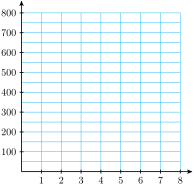

Section 7.2 Exponential Functions
Subsection Introduction
In Section 7.1, we studied functions that describe exponential growth or decay. More formally, we define an exponential function as follows.
Definition 7.19. Exponential Function.
An exponential function has the form
Some examples of exponential functions are
The constant \(a\) is the \(y\)-intercept of the graph because
For the examples above, we find that the \(y\)-intercepts are
The positive constant \(b\) is called the base of the exponential function.
Checkpoint 7.20. QuickCheck 1.
Note 7.21.
We do not allow \(b\) to be negative, because if \(b \lt 0\text{,}\) then \(b^x\) is not a real number for some values of \(x\text{.}\) For example, if \(b = -4\) and \(f (x) = (-4)^x\text{,}\) then \(f (1/2) = (-4)^{1/2}\) is an imaginary number.
We also exclude \(b = 1\) as a base because \(1^x = 1\) for all values of \(x\text{;}\) hence the function \(f (x) = 1^x\) is actually the constant function \(f (x) = 1\text{.}\)
Subsection Graphs of Exponential Functions
The graphs of exponential functions have two characteristic shapes, depending on whether the base, \(b\text{,}\) is greater than \(1\) or less than \(1\text{.}\) As typical examples, consider the graphs of \(f (x) = 2^x\) and \(g(x) =\left(\dfrac{1}{2}\right)^x\) shown below. Some values for \(f\) and \(g\) are recorded in the tables.
| \(x\) | \(f(x)\) |
| \(-3\) | \(\frac{1}{8}\) |
| \(-2\) | \(\frac{1}{4}\) |
| \(-1\) | \(\frac{1}{2}\) |
| \(0\) | \(1\) |
| \(1\) | \(2\) |
| \(2\) | \(4\) |
| \(3\) | \(8\) |
| \(x\) | \(g(x)\) |
| \(-3\) | \(8\) |
| \(-2\) | \(4\) |
| \(-1\) | \(2\) |
| \(0\) | \(1\) |
| \(1\) | \(\frac{1}{2}\) |
| \(2\) | \(\frac{1}{4}\) |
| \(3\) | \(\frac{1}{8}\) |

Notice that \(f (x) = 2^x\) is an increasing function and \(g(x) = \left(\dfrac{1}{2}\right)^x\) is a decreasing function. Both are concave up. In general, exponential functions have the following properties.
Properties of Exponential Functions, \(f(x) = ab^x\text{,}\) \(a \gt 0\).
-
If \(b \gt 1\text{,}\) the function is increasing and concave up;
if \(0 \lt b \lt 1\text{,}\) the function is decreasing and concave up.
The \(y\)-intercept is \((0, a)\text{.}\) There is no \(x\)-intercept.
In the table for \(f(x)\text{,}\) you can see that as the \(x\)-values decrease toward negative infinity, the corresponding \(y\)-values decrease toward zero. As a result, the graph of \(f\) decreases toward the \(x\)-axis, but never touches it, as we move to the left. The negative \(x\)-axis is a horizontal asymptote for exponential functions with \(b \gt 1\text{,}\) as shown in figure (a).
For exponential functions with \(0 \lt b \lt 1\text{,}\) the positive \(x\)-axis is an asymptote, as illustrated in figure (b).
Checkpoint 7.22. QuickCheck 2.
Which statement is true?
An exponential function is not defined for negative inputs.
The outputs of an exponential function cannot be negative.
The \(y\)-intercept of the function \(f(x)=2(3)^x\) is \((0,6)\text{.}\)
The function \(f(x)=16(0.5)^x\) decreases by 8 each time we increase \(x\) by 1.
How does the value of \(b\) affect the graph? For increasing functions, the larger the value of the base, \(b\text{,}\) the faster the function grows. In the Example below, we compare two exponential functions with different bases.
Example 7.23.
Compare the graphs of \(f (x) = 3^x\) and \(g(x) = 4^x\text{.}\)
First, we evaluate each function for several convenient values, as shown in the table.
Then we plot the points for each function and connect them with smooth curves. Note that \(a=1\) for both functions, so their graphs have the same \(y\)-intercept, \((0,1)\text{.}\)
For positive \(x\)-values, \(g(x)\) is always larger than \(f(x)\text{,}\) and is increasing more rapidly. In the figure, we can see that \(g(x) = 4^x\) climbs more rapidly than \(f(x) = 3^x\text{.}\) However, for negative \(x\)-values, \(g(x)\) is smaller than \(f(x)\text{.}\)
| \(x\) | \(f(x)\) | \(g(x)\) |
| \(-2\) | \(\dfrac{1}{9}\) | \(\dfrac{1}{16}\) |
| \(-1\) | \(\dfrac{1}{3}\) | \(\dfrac{1}{4}\) |
| \(0\) | \(1\) | \(1\) |
| \(1\) | \(3\) | \(4\) |
| \(2\) | \(9\) | \(16\) |

Checkpoint 7.24. Practice 1.
Checkpoint 7.25. QuickCheck 3.
True or False.
An exponential function \(f(x)=b^x\) is always positive.
True
False
The function \(f(x)=ab^x\) has a horizontal asymptote at \(y=0\text{.}\)
True
False
The value of \(b\) determines how rapidly the graph of \(f(x)=ab^x\) increases or decreases.
True
False
The graph of \(f(x)=ab^x\) is decreasing if \(b \lt 0\text{.}\)
True
False
Subsection Comparing Exponential and Power Functions
We have studied several families of functions, including linear, quadratic, and power functions. Exponential functions are useful because they model growth or decline by a constant factor.
Caution 7.26.
Exponential functions are not the same as the power functions we studied earlier. Although both involve expressions with exponents, it is the location of the variable that makes the difference. A power function, \(h(x)=hx^p\text{,}\) has a variable base and a constant exponent. An exponential function, \(f(x)=ab^x\text{,}\) has a constant base and a variable exponent.
Power Functions vs Exponential Functions.
\(\hphantom{General formula and m}\) |
Power Functions |
Exponential Functions |
General formula |
\(h(x)=kx^p\) |
\(f(x)=ab^x\) |
Description |
variable base and constant exponent |
constant base and variable exponent |
Example |
\(h(x)=2x^3\) |
\(f(x)=2(3^x)\) |
These two families of functions have very different properties, as well.
Example 7.27.
Which of the functions shown below is exponential, and which is a cubic power function? Find an equation for each.
| \(x\) | \(h(x)\) |
| \(-3\) | \(-54\) |
| \(-2\) | \(-16\) |
| \(-1\) | \(-2\) |
| \(0\) | \(0\) |
| \(1\) | \(2\) |
| \(2\) | \(16\) |
| \(3\) | \(54\) |
| \(x\) | \(f(x)\) |
| \(-3\) | \(\frac{2}{27}\) |
| \(-2\) | \(\frac{1}{4}\) |
| \(-1\) | \(\frac{2}{3}\) |
| \(0\) | \(2\) |
| \(1\) | \(6\) |
| \(2\) | \(18\) |
| \(3\) | \(54\) |
We can tell that \(f\) is the exponential function because its values increase by a factor of 3 for each unit increase in \(x\text{.}\) The base of the function is \(b=3\text{.}\) We also see from the table that \(a=f(0)=2\text{,}\) so \(f(x)=2(3^x)\text{.}\) Thus, \(h\) must be the power function, \(h(x)=kx^3\text{.}\) To find \(k\text{,}\) we notice that \(h(1)=k\text{,}\) so \(k=2\text{,}\) and \(h(x)=2x^3\text{.}\)
Note 7.28.
As you can see from the figure, the graphs of the two functions in the previous Example are also quite different. In particular, note that the power function passes through the origin, while the exponential function approaches the negative \(x\)-axis as a horizontal asymptote.
From the table, we see that \(h(3) = f(3) = 54\text{,}\) so the two graphs intersect at \(x = 3\text{.}\) (They also intersect at approximately \(x = 2.48\text{.}\)) However, if you compare the values of \(h(x) = 2x^3\) and \(f(x) = 2(3^x)\) for larger values of \(x\text{,}\) you will see that eventually the exponential function overtakes the power function.
The relationship in Example 7.27 holds true for all increasing power and exponential functions: For large enough values of \(x\text{,}\) the exponential function will always be greater than the power function, regardless of the parameters in the functions. The figure at left shows the graphs of \(f(x) = x^6\) and \(g(x) = 1.8^x\text{.}\) At first, \(f(x) \gt g(x)\text{,}\) but at around \(x = 37\text{,}\) \(g(x)\) overtakes \(f(x)\text{,}\) and \(g(x) \gt f(x)\) for all \(x \gt 37\text{.}\)
Checkpoint 7.29. Practice 3.
Which of the following functions are exponential functions, and which are power functions?
\(F(x) = 1.5^x\)
exponential
power
neither
\(G(x) = 3x^{1.5}\)
exponential
power
neither
\(H(x) = 3^{1.5x}\)
exponential
power
neither
\(K(x) = (3x)^{1.5}\)
exponential
power
neither
Checkpoint 7.30. QuickCheck 4.
True or False.
A power function eventually grows more rapidly then an exponential function.
True
False
To find the base of an exponential function, we can divide any function value of an integer by the previous one.
True
False
Power functions and exponential functions both pass through the origin.
True
False
Exponential functions model growth or decline by a constant factor.
True
False
Subsection Exponential Equations
An exponential equation is one in which the variable is part of an exponent. For example, the equation
is exponential.
Many exponential equations can be solved by writing both sides of the equation as powers with the same base. To solve the equation above, we write
which is true if and only if \(x = 4\text{.}\)
In general, if two equivalent powers have the same base, then their exponents must be equal also, as long as the base is not \(0\) or \(\pm 1\text{.}\)
In the next Example, we use the laws of exponents to express both sides of the equation as single powers of a common base.
Example 7.31.
Solve the following equations.
\(\displaystyle 3^{x-2} = 9^3\)
\(\displaystyle 27 \cdot 3^{-2x} = 9^{x+1}\)
Using the fact that \(9 = 3^2\text{,}\) we write each side of the equation as a power of \(3\text{:}\)
\begin{align*} 3^{x-2} \amp = \left(3^2\right)^3 \amp \amp \blert{\text{Simplify the right side.}}\\ 3^{x-2} \amp = 3^6 \end{align*}Now we equate the exponents to obtain\begin{align*} x - 2 \amp = 6 \end{align*}The solution is \(x=8\text{.}\)We write each factor as a power of \(3\text{.}\)
\begin{align*} 3^3 \cdot 3^{-2x} \amp= \left(3^2\right)^{x+1}\amp\amp\blert{27=3^3~\text{and}~9=3^2.} \end{align*}We use the laws of exponents to simplify each side:\begin{equation*} 3^{3-2x} = 3^{2x+2} \end{equation*}Now we equate the exponents to obtain\begin{align*} 3 - 2x \amp = 2x + 2\\ -4x =\amp -1 \end{align*}The solution is \(x = \dfrac{1}{4}\text{.}\)
Checkpoint 7.32. QuickCheck 5.
Checkpoint 7.33. Practice 3.
Subsection Applications
Exponential equations arise frequently in the study of exponential growth.
Example 7.34.
During the summer a population of fleas doubles in number every 5 days.
If a population starts with 10 fleas, write a formula for the number of fleas present after \(t\) days.
How long will it be before there are 10,240 fleas?
-
We let \(P\) represent the number of fleas present after \(t\) days. The original population of 10 fleas doubles not every day, but every 5 days. A table of values for \(P\) would look like this.
\(t\) \(P(t)\) \(\hphantom{0000}\) \(0\) \(10\) \(\hphantom{0000}\) \(5\) \(20\) \(P(\alert{5}) = 10 \cdot 2^{\alert{1}} = 20\) \(10\) \(40\) \(P(\alert{10}) = 10 \cdot 2^{\alert{2}} = 40\) \(15\) \(80\) \(P(\alert{15}) = 10 \cdot 2^{\alert{3}} = 80\) \(20\) \(160\) \(P(\alert{20}) = 10 \cdot 2^{\alert{4}} = 160\) Notice that the original population is multiplied by another factor of 2 every 5 days. We must divide \(t\) by 5 to see how many times the population doubles. The formula for \(P\) is thus
\begin{equation*} P(t) = 10 \cdot 2^{t/5} \end{equation*} We set \(P = \alert{10,240}\) and solve for \(t\text{:}\)
\begin{align*} \alert{10,240} \amp = 10\cdot 2^{t/5}\amp\amp \blert{\text{Divide both sides by 10.}}\\ 1024 \amp = 2^{t/5} \amp\amp \blert{\text {Write 1024 as a power of 2.}}\\ 2^{10} \amp = 2^{t/5} \end{align*}We equate the exponents to get \(10 = \dfrac{t}{5}\text{,}\) or \(t = 50\text{.}\) The population will grow to 10,240 fleas in 50 days.
In Example 4a, we can also use the laws of exponents to write the formula as
From this form see that the growth factor for this function is \(2^{1/5}\text{,}\) or about 1.149. The flea population grows at about 14.9% per day.
Checkpoint 7.35. Practice 4.
During an advertising campaign in a large city, the makers of Chip-O’s corn chips estimate that the number of people who have heard of Chip-O’s increases by a factor of 8 every 4 days.
-
If 100 people are given trial bags of Chip-O’s to start the campaign, write a function, \(N(t)\text{,}\) for the number of people who have heard of Chip-O’s after \(t\) days of advertising.
\(N(t)=\)
Use your calculator to graph the function \(N(t)\) on the domain \(0 \le t \le 15\text{.}\)
-
How many days should the makers run the campaign in order for Chip-O’s to be familiar to 51,200 people? Use algebraic methods to find your answer and verify on your graph.
Answer: days
Graph for part (b):

Checkpoint 7.36. QuickCheck 6.
If two equivalent powers have the same nonzero base, \(b \not= 1\) or \(-1\text{,}\) then their
coefficients
exponents
An exponential equation is one in which the variable is part of
an exponent
a base
a radical
\((3^2)^{x+1}\) simplifies to 3 raised to what power?
If a population doubles every 3 days, its growth factor is 2 raised to what power?
Subsection Graphical Solution of Exponential Equations
It is not always so easy to express both sides of the equation as powers of the same base. In the following sections, we will develop more general methods for finding exact solutions to exponential equations. But we can use a graphing utility to obtain approximate solutions.
Example 7.37.
Use the graph of \(y = 2^x\) to find an approximate solution to the equation \(2^x = 5\) accurate to the nearest hundredth.
We enter \(Y_1 = 2\) ^ X and use the standard graphing window (ZOOM 6) to obtain the graph shown in figure (a). We are looking for a point on this graph with \(y\)-coordinate \(5\text{.}\)
Using the TRACE feature, we see that the \(y\)-coordinates are too small when \(x \lt 2.1\) and too large when \(x \gt 2.4\text{.}\) The solution we want lies somewhere between \(x = 2.1\) and \(x = 2.4\text{,}\) but this approximation is not accurate enough.

To improve our approximation, we will use the intersect feature. Set \(Y_2 = 5\) and press GRAPH. The \(x\)-coordinate of the intersection point of the two graphs is the solution of the equation \(2^x = 5\) Activating the intersect command results in figure (b), and we see that, to the nearest hundredth, the solution is \(2.32\text{.}\)
We can verify that our estimate is reasonable by substituting into the equation:
We enter 2 ^ 2.32 ENTER to get \(4.993322196\text{.}\) This number is not equal to \(5\text{,}\) but it is close, so we believe that \(x = 2.32\) is a reasonable approximation to the solution of the equation \(2^x = 5\text{.}\)
Checkpoint 7.38. Practice 5.
Exercises Problem Set 7.2
Warm Up
Exercise Group.
In Problems 1–4, use the laws of exponents to simplify.
1.
\(\displaystyle 3^x \, 3^4\)
\(\displaystyle (3^x)^4\)
\(\displaystyle 3^x \, 4^x\)
2.
\(\displaystyle 8^x \, 8^x\)
\(\displaystyle 8^{x+2} \, 8^{x-1} \)
\(\displaystyle \dfrac{8^{2x}}{8^x} \)
3.
\(\displaystyle b^{-4t} \, b^{2t} \)
\(\displaystyle (b^t)^{1/2} \)
\(\displaystyle b^{t-1} \, b^{1-t} \)
4.
\(\displaystyle b^{t/2} \, b^{t/2} \)
\(\displaystyle \dfrac{b^{2t}}{b} \)
\(\displaystyle b^{1/t} \, b^t \)
Exercise Group.
For Problems 5 and 6, solve. Round your answers to two places if necessary.
5.
\(116,473 = 48,600(1 + r )^{15}\)
6.
\(10.56 = 12.4(1 - r )^{20}\)
Skills Practice
Exercise Group.
For Problems 7-14, solve.
7.
\(5^{x+2} = 25^{4/3}\)
8.
\(3^{2x-1} =\dfrac{\sqrt{3}}{9} \)
9.
\(4\cdot 2^{x-3} =8^{-2x} \)
10.
\(9\cdot 3^{x+2} =81^{-x} \)
11.
\(27^{4x+2} =81^{x-1} \)
12.
\(16^{2-3x} =64^{x+5} \)
13.
\(10^{x^2-1} =1000 \)
14.
\(5^{x^2-x-4} =25 \)
Exercise Group.
For Problems 15 and 16,
-
graph the function in the window
\begin{align*} \text{Xmin} \amp = -4.7 \amp\amp \text{Xmax} = 4.7\\ \text{Ymin} \amp = 0 \amp\amp \text{Ymax} = 10 \end{align*} Use your graph to find an approximate solution accurate to the nearest hundredth.
15.
\(\displaystyle y=3^{x-1}\)
\(\displaystyle 3^{x-1}=4\)
16.
\(\displaystyle y=4^{-x}\)
\(\displaystyle 4^{-x}=7\)
17.
Find the \(y\)-intercept of each exponential function and decide whether the graph is increasing or decreasing.
\(\displaystyle f (x) = 26(1.4)^x\)
\(\displaystyle g(x) = 1.2(0.84)^x\)
\(\displaystyle h(x)=75\left(\dfrac{4}{5} \right)^x \)
\(\displaystyle k(x)=\dfrac{2}{3}\left(\dfrac{9}{8} \right)^x \)
18.
Decide whether each function is an exponential function, a power function, or neither.
\(\displaystyle g(t)=3 t^{0.4} \)
\(\displaystyle h(t)=4(0.3)^t \)
\(\displaystyle D(x)=6x^{1/2} \)
\(\displaystyle E(x)=4x+x^4 \)
Exercise Group.
For Problems 19 and 20, graph each pair of functions on the same axes by making a table of values and plotting points by hand. Choose appropriate scales for the axes.
19.
\(\displaystyle f(x)=3^x \)
\(\displaystyle g(x)=\left(\dfrac{1}{3} \right)^x \)
20.
\(\displaystyle h(t)=4^{-t} \)
\(\displaystyle q(t)=-4^t \)
21.
Which of the following functions have identical graphs? Explain why.
\(\displaystyle h(x) = 6^x \)
\(\displaystyle k(x)=\left(\dfrac{1}{6} \right)^x \)
\(\displaystyle m(x)=6^{-x} \)
\(\displaystyle n(x)=\dfrac{1}{6^x} \)
Exercise Group.
For Problems 22 and 23:
Use a graphing calculator to obtain the graphs for \(-5 \le x \le 5\text{.}\)
Find the largest and smallest function values on the interval \(-5 \le x \le 5\text{.}\)
22.
\(h(x)=2.4^x\)
23.
\(P(x)=0.7^x\)
24.
The graph of \(f(x)=P_0 a^x\) is shown in the figure.

Read the value of \(P_0\) from the graph.
Make a short table of values for the function by reading values from the graph. Does your table confirm that the function is exponential?
Use your table to calculate the growth factor \(a\text{.}\)
Using your answers to parts (a) and (c), write a formula for \(f(x)\text{.}\)
25.
The graph of \(g(x)=P_0 a^x\) is shown in the figure.

Read the value of \(P_0\) from the graph.
Make a short table of values for the function by reading values from the graph. Does your table confirm that the function is exponential?
Use your table to calculate the decay factor \(a\text{.}\)
Using your answers to parts (a) and (c), write a formula for \(g(x)\text{.}\)
Exercise Group.
For Problems 26 and 27, which tables could describe exponential functions? Explain why or why not. If the function is exponential, find its growth or decay factor.
26.
\(h\) \(a\) \(0\) \(70\) \(1\) \(7\) \(2\) \(0.7\) \(3\) \(0.07\) \(4\) \(0.007\) \(t\) \(Q\) \(0\) \(0\) \(1\) \(\frac{1}{4} \) \(2\) \(1\) \(3\) \(\frac{9}{4} \) \(4\) \(4\)
27.
\(t\) \(y\) \(1\) \(100\) \(2\) \(50\) \(3\) \(33\frac{1}{3} \) \(4\) \(25\) \(5\) \(20\) \(x\) \(P\) \(1\) \(\frac{1}{2} \) \(2\) \(1\) \(3\) \(2\) \(4\) \(4\) \(5\) \(8\)
Applications
28.
A mobile home loses 20% of its value every 3 years.
A certain mobile home costs $20,000. Write a function for its value after \(t\) years.
Use your calculator to graph your function on the interval \(0 \le t\le 30\text{.}\)
How long will it be before a $20,000 mobile home depreciates to $12,800? Use algebraic methods to find your answer, and verify it on your graph.
29.
Before the advent of antibiotics, an outbreak of cholera might spread through a city so that the number of cases doubled every 6 days.
Twenty-six cases were discovered on July 5. Write a function for the number of cases of cholera \(t\) days later.
Use your calculator to graph your function on the interval \(0 \le t\le 90\text{.}\)
When should hospitals expect to be treating 106,496 cases? Use algebraic methods to find your answer, and verify it on your graph.
30.
The frequency of a musical note depends on its pitch. The graph shows that the frequency increases exponentially. The function \(F(p) = F_0b^p\) gives the frequency as a function of the number of half-tones, \(p\text{,}\) above the starting point on the scale

Read the value of \(F_0\) from the graph. (This is the frequency of the note A above middle C.)
Find an approximation for the growth factor, \(b\text{,}\) by comparing two points on the graph. (Some of the points on the graph of \(F(p)\) are approximately \((1, 466)\text{,}\) \((2, 494)\text{,}\) \((3, 523)\text{,}\) and \((4, 554)\text{.}\))
Using your answers to (a) and (b), write a formula for \(F(p)\text{.}\)
The frequency doubles when you raise a note by one octave, which is equivalent to 12 half-tones. Use this information to find an exact value for \(b\text{.}\)
31.
For several days after the Northridge earthquake on January 17, 1994, the area received a number of significant aftershocks. The red graph shows that the number of aftershocks decreased exponentially over time. The graph of the function \(S(d) = S_0b^d\text{,}\) shown in black, approximates the data. (Source: Los Angeles Times, June 27, 1995)

Read the value of \(S_0\) from the graph.
Find an approximation for the decay factor, \(b\text{,}\) by comparing two points on the graph. (Some of the points on the graph of \(S(d)\) are approximately \((1, 82)\text{,}\) \((2, 45)\text{,}\) \((3, 25)\text{,}\) and \((4, 14)\text{.}\))
Using your answers to (a) and (b), write a formula for \(S(d)\text{.}\)
Exercise Group.
For Problems 32 and 33, fill in the tables. Graph each pair of functions in the same window. Then answer the questions below.
For how many values of \(x\) does \(f (x) = g(x)\text{?}\)
Estimate the value(s) of \(x\) for which \(f (x) = g(x)\text{.}\)
For what values of \(x\) is \(f (x)\lt g(x)\text{?}\)
Which function grows more rapidly for large values of \(x\text{?}\)
32.
| \(x\) | \(f(x)=x^2\) | \(g(x)=2^x \) |
| \(-2\) | ||
| \(-1\) | ||
| \(0\) | ||
| \(1\) | ||
| \(2\) | ||
| \(3\) | ||
| \(4\) | ||
| \(5\) |
33.
| \(x\) | \(f(x)=x^3\) | \(g(x)=3^x \) |
| \(-2\) | ||
| \(-1\) | ||
| \(0\) | ||
| \(1\) | ||
| \(2\) | ||
| \(3\) | ||
| \(4\) | ||
| \(5\) |
34.
Related species living in the same area often evolve in different sizes to minimize competition for food and habitat. Here are the masses of eight species of fruit pigeon found in New Guinea, ranked from smallest to largest. (Source: Burton, 1998)
| Size rank | \(1\) | \(2\) | \(3\) | \(4\) | \(5\) | \(6\) | \(7\) | \(8\) |
| Mass (grams) | \(49\) | \(76\) | \(123\) | \(163\) | \(245\) | \(414\) | \(592\) | \(802\) |
-
Plot the masses of the pigeons against their order of increasing size. What kind of function might fit the data?
 Compute the ratios of the masses of successive sizes of fruit pigeons. Are the ratios approximately constant? What does this information tell you about your answer to part (a)?
Compute the average ratio to two decimal places. Using this ratio, estimate the mass of a hypothetical fruit pigeon of size rank zero.
Using your answers to part (c), write an exponential function that approximates the data. Graph this function on top of the data and evaluate the fit.